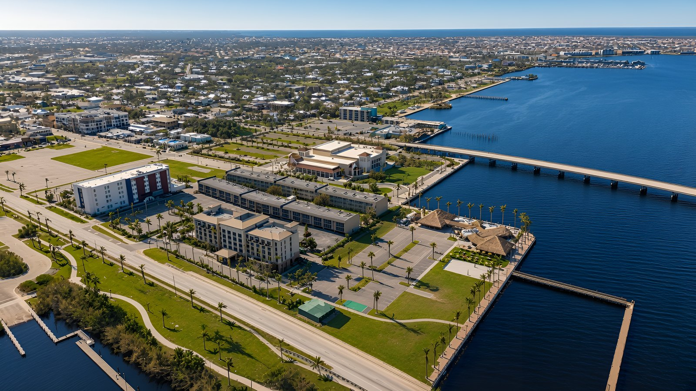
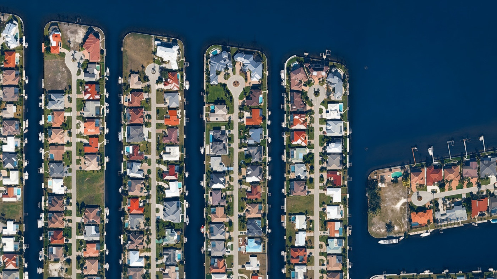
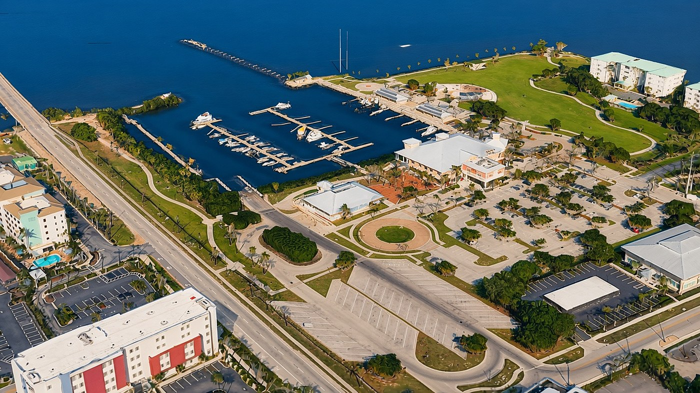

Draft preview for review. Not published. New Page (Top Level) for /moving-to-punta-gorda/. Goes live 2026-11-25. Images shown from local copies. Rollout batch

Relocation guide · Punta Gorda & Charlotte County, FL
Moving to Punta Gorda is mostly about three decisions: which part of town, how close to the water, and how you will handle storm season.
Everything else, from the driver license to the homestead filing, is a checklist. This page is our home base for both. It gives you the short version of each topic, with public sources, and links to the deeper guides as we publish them.
Bookmark it. We update it as new guides go live.
The short version
A small harbor city. Punta Gorda is Charlotte County's seat and only incorporated city, with 20,278 residents in ACS 2020-2024 data and a median age of 66.3.
Water shapes everything. The Harborwalk runs 2.5 miles along the water, and Punta Gorda Isles has about 45 miles of canals.
Plan for storms. Charley (2004) and Ian (2022) both came ashore here. Flood zone and insurance come first.
Watch two dates. Own and live in your home on January 1, and file homestead by March 1. Amendment 3 also changes the rules for people who become residents after December 31, 2026.
On this page
01Punta Gorda at a glanceThe numbers02Pick your part of town8 areas03Climate and stormsPlan ahead04Your first 30 daysChecklist05Money: homes, taxes, insuranceCosts06SchoolsDistrict A07Everyday lifeThings to do08Every guide in one placeThe library09FAQs6 answersPart 01
Context first, then the decisions.
Punta Gorda is the county seat of Charlotte County and its only incorporated city, a harbor town at the mouth of the Peace River on Florida's Gulf Coast. ACS 2020-2024 data show 20,278 residents, a median age of 66.3, and a median owner-reported home value of $518,100, against $328,900 for the county. Punta Gorda Airport served a record 2,282,002 passengers in 2025.
20,278
residents in the city, ACS 2020-2024
66.3
median age. The county is 59.9
$518,100
median owner-reported home value. County $328,900
2.28M
Punta Gorda Airport passengers in 2025, a record
Source: U.S. Census Bureau ACS 2020-2024, Punta Gorda city; ACS, Charlotte County; Punta Gorda Airport, 2025 passenger traffic.
Those are city figures. Most people with a Punta Gorda mailing address actually live outside the city limits, in unincorporated Charlotte County, which is why our Punta Gorda ZIP codes guide is a good second read. For an honest list of who loves it here and who should think twice, read Is Punta Gorda a good place to live?
Part 02
Living in Punta Gorda can mean very different lives.
Living in Punta Gorda can mean the walkable Historic District, a canal home in Punta Gorda Isles or Burnt Store Isles, a marina community at Burnt Store Marina, an inland neighborhood such as Deep Creek, or newer construction east of the interstate in Babcock Ranch. Many buyers also look at Port Charlotte, Rotonda West, and South Gulf Cove.
Walkable
Close to the Harborwalk, shops, and restaurants. See the Historic District page.
First check
Building age and flood zone
Boating
About 45 miles of canals, with seawalls maintained by the city through assessment districts. Read a year on the canal in PGI.
First check
Seawall and canal assessment
Boating
About 9 miles of canals inside the city. See the Burnt Store Isles page.
First check
Seawall age and route to the harbor
Marina
A marina and golf community south of the city in ZIP 33955. Our myths post covers slips and homes.
First check
The slip, as a separate purchase
Inland
Year-round neighborhoods of lakes and single-family streets north of the Peace River. See the Deep Creek page.
First check
Section association and flood zone
Newer
A newer master-planned town in east Charlotte County, ZIP 33982, with its own charter school, Babcock Neighborhood School.
First check
Community fees and districts
Next door
Larger and more varied, with prices to match. Start with our Port Charlotte guide.
First check
Canal, locked canal, or dry street
Golf and Gulf
West county options. Read Rotonda West: 6 questions and our South Gulf Cove guide.
First check
Water view vs water access
Low upkeep
From downtown towers to marina villas. Our condo buyer checklist covers association documents.
First check
Reserves and insurance
Source: City of Punta Gorda, Canals; Babcock Ranch.

Punta Gorda Isles canal fingers opening toward the harbor.
Browse every neighborhood we cover on the Punta Gorda area page, including Heritage Landing, Harbour Oaks, Estates on Peace River, Riverside and Cleveland, and Burnt Store Meadows.
Part 03
Mild winters, hot wet summers, and a real hurricane history.
NOAA's 1991-2020 normals for Punta Gorda show a January average high of 75.3 degrees and a July high of 92.5, with 52.97 inches of rain a year, about 33.3 inches of it from June through September. Hurricane Charley came ashore as a Category 4 storm on August 13, 2004, and Hurricane Ian made a second landfall near Punta Gorda on September 28, 2022.
75.3°
January average high
92.5°
July average high
52.97 in
rain a year
33.3 in
of it from June through September
Source: NOAA National Weather Service, Punta Gorda normals 1991-2020.
Aug 13, 2004
Hurricane Charley came ashore as a Category 4 hurricane near Cayo Costa, and its eyewall then passed over the Punta Gorda area.
Sep 28, 2022
Hurricane Ian made landfall on Cayo Costa, then made a second landfall near Punta Gorda, according to the National Hurricane Center.
Source: NHC, Hurricane Charley report; NHC, Hurricane Ian report.
Before you fall for a house, do three things: look up the FEMA flood zone on the FEMA Flood Map Service Center, find your evacuation zone with Florida's Know Your Zone tool, and get insurance quotes. FEMA's Risk Rating 2.0 prices flood insurance using factors such as distance to water, ground elevation, and first-floor height, so two homes a block apart can price very differently. We will not guess at a premium for you; a licensed agent can quote the actual house.
Part 04
The paperwork that turns a house into a Florida residence.
After you move, get a Florida driver license within 30 days of establishing residency, and title and register your vehicles within 10 days. Register to vote or file a Declaration of Domicile, enroll children in school, and, if you own the home and live in it on January 1, apply for the homestead exemption by March 1.
Within 10 days
Get Florida auto insurance and title and register your vehicles. In Charlotte County, the Tax Collector handles tags and titles.
Within 30 days
Get your Florida driver license in person. The Tax Collector also handles driver license services.
Soon after
Register to vote, or file a Declaration of Domicile with the Clerk of Court. Either can serve as proof of residency for homestead.
Before Jan 1
Own the home and live in it as your permanent residence. That is the date the Property Appraiser looks at.
By Mar 1
Apply for homestead with the Charlotte County Property Appraiser. Our homestead guide walks through it.
Source: FLHSMV, New Resident; Charlotte County Tax Collector; Charlotte County Clerk of Court; Charlotte County Property Appraiser, Exemptions.
The date that changed this year
Amendment 3, approved by Florida voters on November 3, 2026, raises the homestead exemption for non-school taxes starting in 2027. According to the Florida Department of Revenue, people who were not Florida residents as of December 31, 2026 start at the existing exemption amounts and become eligible for the increase in their fifth year of exemption. Residency is a legal question, so talk with the Property Appraiser and a Florida attorney about your own timing.
Source: Florida Department of Revenue, PTO 26-21.
Utilities depend on the address. Ask the seller for recent bills, confirm the water, sewer, and electric providers for the parcel, and check whether the home is on central sewer or a septic system, because that changes inspections and future costs.
Part 05
Real numbers where they exist, and no guesses where they do not.
Home values vary widely across the area: the ACS median owner-reported value is $518,100 for the city of Punta Gorda and $328,900 for Charlotte County. The FHFA house price index for the Punta Gorda metro area was down 0.2 percent from a year earlier in the second quarter of 2026. Charlotte County had 2,856 active residential listings on a typical day in October 2026, according to Florida Gulf Coast University.
$518,100
median owner-reported value, Punta Gorda city
$328,900
median owner-reported value, Charlotte County
-0.2%
FHFA metro price index, Q2 2026 vs a year earlier
2,856
active county listings on a typical October 2026 day
Source: ACS, Punta Gorda city; ACS, Charlotte County; FHFA House Price Index, Punta Gorda metro; FGCU, Charlotte County active listings.
Owner-reported values are survey estimates, not sale prices. The price index is a repeat-sales index for the whole metro area. For a specific home, ask for recent comparable sales on the same street.
Property taxes depend on the assessed value, the taxing districts, and your exemptions, so the homestead filing matters. Insurance is the cost most buyers underestimate, so get quotes on the actual house early. If you are still deciding whether to buy at all, read Should I rent or buy?, and for a local market overview, see A Local Guide to Punta Gorda Real Estate. Run payments with our mortgage calculator.
Part 06
A district that just earned an A.
Charlotte County Public Schools earned an A from the Florida Department of Education for 2025-26, its first district A in 15 years, and ranked 21st of Florida's 67 districts. Schools are assigned by attendance boundary, not ZIP code, so check the exact address.
Our Charlotte County schools guide lists every 2025-26 school grade by area, with the district's boundary pages linked.
Source: Charlotte County Public Schools, July 1, 2026.
Part 07
What fills a week here.
Everyday life in Punta Gorda centers on the water: the 2.5-mile Harborwalk connects Laishley Park, Gilchrist Park, and Fishermen's Village, and boating, fishing, and waterfront parks are a short drive from most neighborhoods. Our list of 22 things to do in Punta Gorda covers the rest, from murals to day trips.

Laishley Park Marina, on the Harborwalk.
Start with 22 best things to do in Punta Gorda, from a local. If a boat is part of the plan, our waterfront buying guide for boaters covers canals, bridges, and lifts, and if you would rather build, read land for sale in Punta Gorda: 8 steps from lot to build.
Source: City of Punta Gorda, Harborwalk.
Part 08
We add to this list as new guides go live.
Deciding
Is Punta Gorda a good place to live?The honest verdict22 best things to do in Punta GordaFrom a localA Local Guide to Punta Gorda Real EstateMarket overviewNeighborhoods
Punta Gorda ZIP codes, decodedWhich ZIP is whichA year on the canal in Punta Gorda IslesCanal lifeBurnt Store Marina: 5 myths bustedMarina livingPort Charlotte real estate by the numbersNext doorRotonda West: 6 questions to askWest countySouth Gulf Cove guideLocked canalsBuying
Punta Gorda condos: the buyer's checklistCondosWaterfront homes: a boater's buying guideBoatingLand for sale: 8 steps from lot to buildBuildingHow we work with buyersOur processTaxes, schools and paperwork
Charlotte County homestead exemptionMarch 1 deadlineCharlotte County schools guide2026 gradesPart 09
Is Punta Gorda a good place to live?
For people who want a small harbor city with water access and can budget for storms and insurance, often yes. Summers are hot and wet, and the city's median owner-reported home value is $518,100. Our full answer is in Is Punta Gorda a good place to live?
What should I do first after moving to Punta Gorda?
Get a Florida driver license within 30 days of establishing residency, title and register your vehicles within 10 days, register to vote or file a Declaration of Domicile, and, if you own the home, apply for homestead by March 1.
Is Punta Gorda in a hurricane zone?
Yes. Hurricane Charley came ashore as a Category 4 storm on August 13, 2004, and Hurricane Ian made a second landfall near Punta Gorda on September 28, 2022. Check the FEMA flood zone and your evacuation zone for any address, and get an insurance quote before you commit.
What is the weather like in Punta Gorda?
Warm winters and hot, wet summers. NOAA's 1991-2020 normals show a January average high of 75.3 degrees and a July high of 92.5, with 52.97 inches of rain a year, about 33.3 inches of it from June through September.
Does it matter when I become a Florida resident?
It can. Under Amendment 3, approved November 3, 2026, people who were not Florida residents as of December 31, 2026 start at the existing homestead amounts and qualify for the larger exemption in their fifth year. Ask the Property Appraiser and a Florida attorney about your situation.
Where is the nearest airport to Punta Gorda?
Punta Gorda Airport (PGD), in ZIP 33982. It served a record 2,282,002 passengers in 2025, and Allegiant is its primary carrier.
Planning a move to Punta Gorda?
We can help with every step, from the first tour to the homestead filing. Call or text The Helgemo Team at (941) 770-2275.
The office is at 320 Cross Street, Punta Gorda, Florida 33950. You can also meet Brian Helgemo or read more about the team.
Sources: U.S. Census Bureau, American Community Survey 2020-2024 estimates for Punta Gorda city, via Census Reporter; ACS 2020-2024, Charlotte County, via Census Reporter; Punta Gorda Airport, 2025 passenger traffic; City of Punta Gorda, Harborwalk; City of Punta Gorda, Canals; NOAA National Weather Service Tampa Bay, Punta Gorda monthly and annual normals (1991-2020); National Hurricane Center, Tropical Cyclone Report: Hurricane Charley; National Hurricane Center, Tropical Cyclone Report: Hurricane Ian; FEMA, NFIP Risk Rating 2.0; Florida Division of Emergency Management, Know Your Zone; Florida Department of Highway Safety and Motor Vehicles, New Resident; Charlotte County Property Appraiser, Exemptions; Florida Department of Revenue, PTO 26-21, Constitutional Amendment 3; Federal Housing Finance Agency all-transactions House Price Index, Punta Gorda, FL metropolitan area, Q2 2026; Florida Gulf Coast University Regional Economic Research Institute, Charlotte County active residential listings, October 2026; Charlotte County Public Schools, July 1, 2026 district grade announcement.